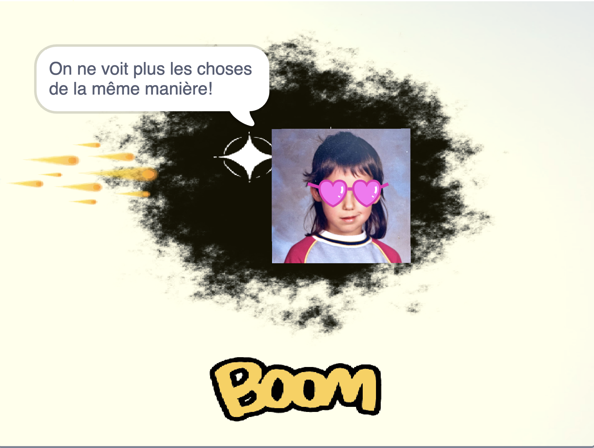

Pour commencer la retraite, clique sur les LUNETTES AUX VERRES EN FORME DE CŒUR. Pump up the volume maintenant et active ta caméra lorsqu'on te le demandera. Je ne te volerai pas ton visage, c'est promis!

Salut! Bienvenue à cette . Lorsque tu cliqueras sur les lunette aux verres en forme de cœur, tu devras traverser des épreuves qui ont pour but d'élever ta conscience. Ça prend environ 15 minutes. Tu seras sans doute un peu tiraillé.e entre le self-care et l'altruisme, entre le confort et l'engagement social, mais surtout entre l'envie de cliquer partout et celle d'écouter jusqu'au bout les personnes qui, sur ton parcours, ont des choses à t'apprendre : l'égo est tellement
Pour tout te dire, tu n'es pas vraiment libre durant cette retraite: il te faut suivre à la lettre les instructions et les enseignements de TOUTI, LA SORCIÈRE DE RIMOUSKI. Elle te guidera durant ce parcours hautement spirituel qui mène à la où je t'attends avec d'autres créatures éveillées. Si tu ne portes pas bien attention, que tu es pressé.e par le temps, c'est comme dans la vraie vie: mon œuvre risque de s'emmêler. On n'accède pas à la dans l'urgence et en voulant tout contrôler, tu devrais savoir ça.
J'ai si hâte de te voir dans la Plaine!

Crédits:
Tu trouveras, au fil de ton parcours, mes aquarelles, des images libres de droits trouvées sur Pexel et Pixabay, ma voix modifiée à l'aide de Garage Band, mais, pour l'essentiel, la retraite a été créée avec le logiciel libre Scratch de MIT qui vise à montrer aux enfants (et aux femmes de 42 ans) à faire des jeux vidéo.